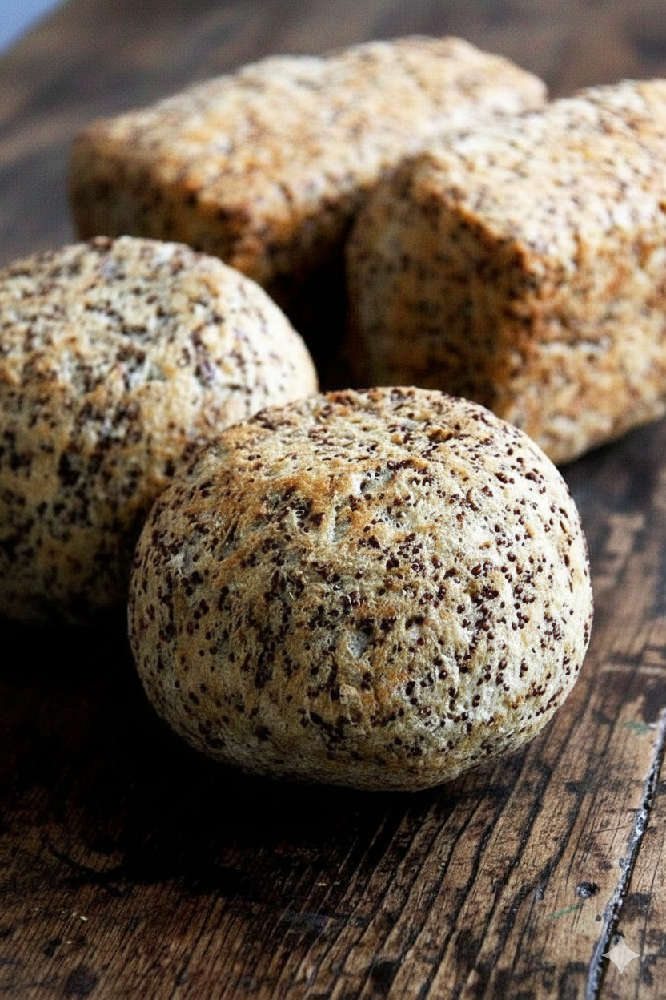

Multi-Grain Power Loaf
Multi-Grain Power Loaf
|
- 3 cups whole wheat flour
- ½ cup rolled oats
- 1 tbsp instant yeast
- 1 tsp salt
- ¼ cup mixed seeds (pumpkin, sunflower, flax)
- ¼ cup dried cranberries
- 1 ½ cups warm water
- 1 tbsp honey
- 2 tbsp olive oil
|
- Mix: Combine dry ingredients and seeds. Gradually add water, honey, and oil.
- Knead: Knead for 5-8 minutes until smooth. Cover and let rise in a warm place for 1 hour.
- Shape: Form into an oval loaf. Brush the top with water and press extra seeds/oats onto the surface.
- Second Rise: Let it rest for 20 minutes. Preheat oven to 200°C.
- Bake: Score the top with a knife. Bake for 30-40 minutes until golden brown.
- Cool: Allow to cool completely before slicing.
|
Watch video
|
22 |
Edit
|
Delete
|
|

Flaxseed & Quinoa Bread
|
- 1 cup cooked quinoa
- ½ cup ground flaxseeds
- 1 cup chickpea flour
- 1 tsp baking soda
- ½ tsp salt
- 1 tbsp apple cider vinegar
- water (adjust as needed)
|
- Combine Dry Ingredients: In a large bowl, mix the chickpea flour, ground flaxseeds, baking soda, and salt.
- Add Grains: Fold in the cooked quinoa until evenly distributed.
- Mix Liquids: Add the apple cider vinegar, then gradually pour in water while stirring until you reach a thick, scoopable batter consistency.
- Shape: Place the dough into a greased loaf pan or shape it into rustic rolls (like in the image).
- Bake: Preheat your oven to 180°C and bake for about 45 minutes (or until the crust is firm and sounds hollow when tapped).
- Cool: Let it rest on a wooden surface until completely cool before slicing.
|
No video for recipe |
15 |
Edit
|
Delete
|
 Oat & Banana Muffins
Oat & Banana Muffins
|
- 2 ripe bananas (mashed)
- 2 eggs
- 1 tbsp honey (or maple syrup)
- 1.5 cups oat flour (or quick oats blended into flour)
- 1 tsp baking powder
- ½ tsp cinnamon
|
- Prep Wet: In a bowl, mash bananas. Whisk in eggs and honey.
- Prep Dry: In a separate bowl, combine oat flour, baking powder, and cinnamon.
- Combine: Add dry ingredients to wet, mix until just combined (do not overmix).
- Bake: Pour batter into greased muffin tins. Bake at 180°C (350°F) for 20-25 minutes, or until a toothpick comes out clean.
|
Watch video
|
28 |
Edit
|
Delete
|